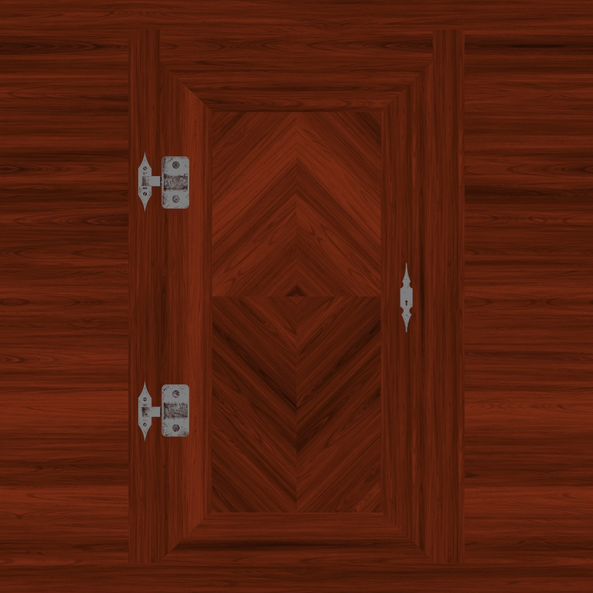
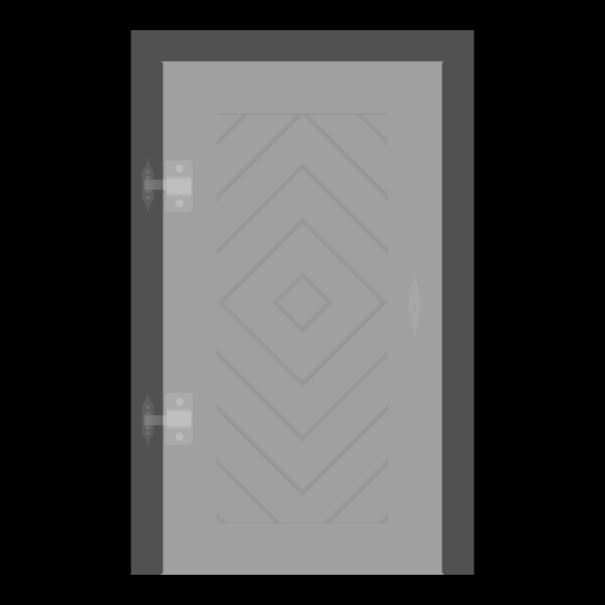
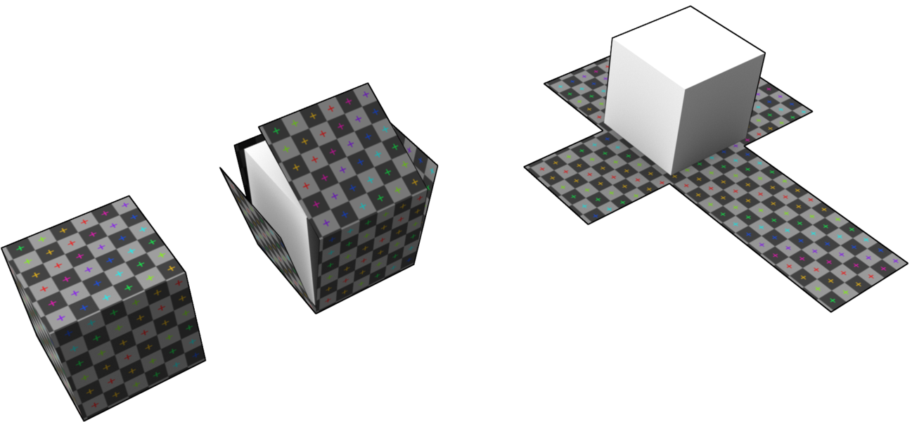

H2 - P2023
Développement web
Cours 11
- github : https://github.com/brunosimon/hetic-p2023
- site : http://bruno-simon.com/hetic/p2023/
- contact : bruno.simon@hetic.net
Textures
Pour plus de réalisme, nous allons utiliser des textures
Three.js gère plusieurs types de textures avec des sources différentes
- Texture pour des images
- CanvasTexture pour des canvas
- VideoTexture pour des vidéos
Nous n'allons nous concentrer que sur les images
Les types de textures
Les textures permettent d'appliquer une image sur notre géométrie, mais les textures permettent aussi d'appliquer tout une séries d'effets
Voici les utilisations les plus connues
color ou albedo

Il ne s'agit que de l'image qui sera appliquée
alpha

Masque de visibilité
Le blanc sera visible, le noir sera invisible
ambient occlusion

Assombrit les interstices pour donner du relief
height ou displacement

Déplace les vertices pour donner de l'épaisseur de façon grossière
normal ou bump

Simule un relief de façon précise
☝️ la bump est en noir et blanc, mais est aussi moins précise qu'une normal
metalness

Masque de zones métalliques
Le blanc réagira comme du metal
roughness

Masque de zones rugueuses
Le blanc réagira comme une matière rugueuse
Il existe encore bien d'autres types de textures, mais ceux que nous venons de voir sont les plus utilisés et tendent à être les standards
Beaucoup de ces textures nécessitent d'utiliser des lumières pour en voir l'effet
Nous les verrons donc plus tard
Un pack de textures 💾 vous est fourni avec le cours
Il nous servira aussi pour les cours suivants
Ajoutez le contenu du dossier house dans votre projet dans le dossier src/images/
Nous allons commencer avec la texture d'herbe src/images/house/grass/color.jpg
Charger une image
Pour pouvoir utiliser une image en texture, il faut l'avoir chargée
Il est possible d'écouter le chargement d'une image en JS natif
// ...
import grassColorSource from './images/house/grass/color.jpg'
/**
* Textures
*/
const grassColorImage = new Image()
const grassColorTexture = new THREE.Texture(grassColorImage)
grassColorImage.addEventListener('load', () =>
{
grassColorTexture.needsUpdate = true
})
grassColorImage.src = grassColorSource
Il est aussi possible d'utiliser la class TextureLoader qui automatise le processus
// ...
import grassColorSource from './images/house/grass/color.jpg'
/**
* Textures
*/
const textureLoader = new THREE.TextureLoader()
const grassColorTexture = textureLoader.load(grassColorSource)
☝️ Une instance de textureLoader permet de charger autant de textures que l'on veut
Une fois la texture créée, il suffit de l'ajouter dans la propriété map du material (ici MeshBasicMaterial)
const grass = new THREE.Mesh(
new THREE.PlaneGeometry(15, 15, 1, 1),
new THREE.MeshBasicMaterial({ color: 0x66bb66, map: grassColorTexture })
)
☝️ Si vous laissez la propriété color, cette couleur va s'appliquer sur la texture
La texture se réparti sur la mesh en fonction de l'UV
Voyez l'UV unwrap comme le fait de découper et déplier votre géométrie afin de l'applatir
☝️
La majorité des Geometry de Three.js sont déjà unwrap
Si vous souhaitez faire votre propre unwrap, il vaut mieux utiliser un logiciel 3D puis importer le modèle
⚠️ Le chargement des textures ne fonctionnera pas toujours avec des fichiers locaux pour des raisons de sécurité
Il vous faudra lancer un serveur
⚠️ La résolution des textures doit être une puissance de 2
Exemples: 512x512, 1024x512, 4048x4048
Si vous utilisez une résolution qui n'est pas une puissance de 2, Three.js s'occupera de redimensionner la texture, ce qui n'est pas conseillé
Repeat
Il est possible de répéter la texture un certain nombre de fois
grassColorTexture.wrapS = THREE.RepeatWrapping
grassColorTexture.wrapT = THREE.RepeatWrapping
grassColorTexture.repeat.x = 2
grassColorTexture.repeat.y = 2
Rotation
Il est possible de faire pivoter la texture
⚠️ Le centre de rotation se trouve par défaut dans le coin en haut à gauche de la texture
☝️ Désactivez le ReapetWrapping si vous souhaitez voir le résultat
grassColorTexture.rotation = Math.PI * 0.5
grassColorTexture.center.x = 0.5
grassColorTexture.center.y = 0.5
MinFilter et MagFilter
Le magFilter correspond à quelle couleur de la texture affichée lorsque qu'un pixel de la texture couvre plusieurs pixels du rendu
texture.magFilter = THREE.LinearFilter // Default
texture.magFilter = THREE.NearestFilter
THREE.LinearFilter

THREE.NearestFilter

Le minFilter correspond à quelle couleur de la texture affichée lorsque plusieurs pixels de la texture rentrent dans un pixel de rendu
texture.minFilter = THREE.LinearMipmapLinearFilter // Default
texture.minFilter = THREE.LinearMipmapNearestFilter
texture.minFilter = THREE.LinearFilter
texture.minFilter = THREE.NearestFilter
texture.minFilter = THREE.NearestMipmapNearestFilter
texture.minFilter = THREE.NearestMipmapLinearFilter
THREE.LinearMipmapLinearFilter

THREE.NearestFilter

Où trouver des textures
- poliigon.com (certaines payantes)
- 3dtextures.me (gratuites)
- arroway-textures.ch (basse résolution gratuites)